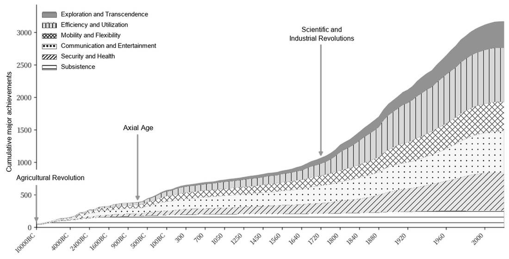
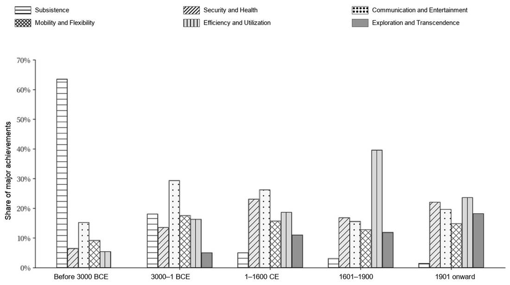
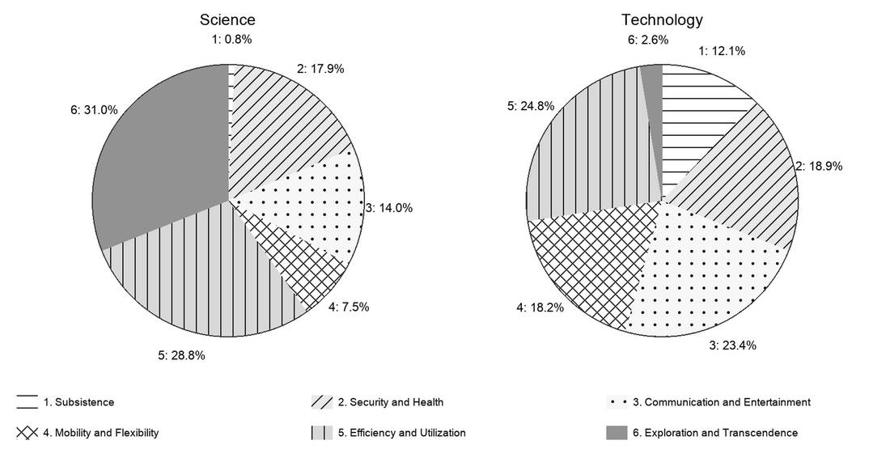
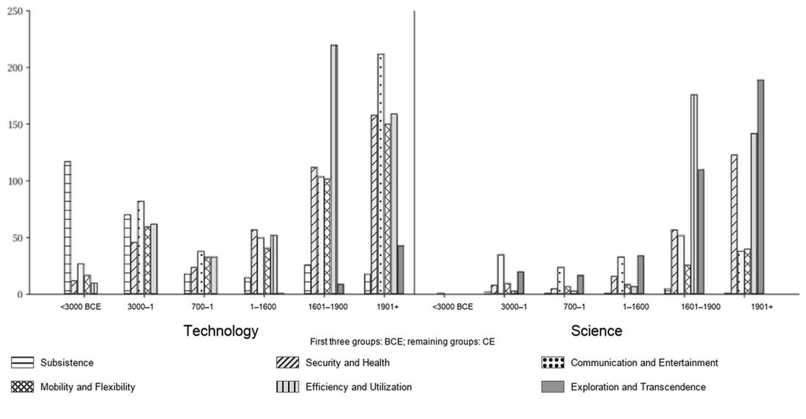

Over more than ten thousand years, how has the technological frontier evolved, and what long-term patterns emerge?
The major achievements in the database offer evidence of long-term changes at the frontier of science and technology. Arranged chronologically and classified by need, they reveal shifts in the focus of innovation and the ways different categories support one another.
Figure I-4 shows the cumulative record over more than ten thousand years. Several periods of faster accumulation broadly coincide with the Agricultural Revolution, the development of ancient civilizations and the Axial Age, and the modern Scientific and Industrial Revolutions. The cumulative curves describe the pace of accumulation within the database; their details also reflect the survival of historical evidence and the rules of inclusion.
Figure I-4. Long-term cumulative trends in major scientific and technological achievements.

Source: Database of Major Scientific and Technological Achievements.
To facilitate comparison, we distinguish several periods by drawing on historical chronology and the distribution of achievements across categories. A period is named after a category when that category accounts for about 30% or more of its entries. If none clearly predominates, we call it a Transitional Age. These names summarize the relative focus of entries in the database.
Figure I-5. Shares of the six categories in different historical periods.

Source: Database of Major Scientific and Technological Achievements.
Figure I-5 presents the category composition of four broad periods: Subsistence, Communication, Transition, and Efficiency. The Efficiency Age is divided into 1601–1900 and 1901 onward.
The Subsistence Age: Before 3000 BCE, more than 60% of entries belong to Subsistence. From Paleolithic tools through the domestication of plants and animals in the Agricultural Revolution to pottery and textiles suited to settled life, people continually expanded their ability to obtain necessities.
The Communication Age: From 3000 to 1 BCE, Communication and Entertainment accounts for about 30% of entries. Writing, counting, and mathematics developed in several civilizations, strengthening the capacity to record, calculate, and transmit knowledge. This period also includes the Axial Age, when intellectual and knowledge traditions emerged that would exert a lasting influence.
The Transitional Age: From 1 to 1600 CE, achievements are distributed relatively evenly across categories. Communication and Entertainment still accounts for about 26%, and Subsistence for about 5%, while the other categories continued to accumulate achievements in different regions.
The Efficiency Age: Since 1601, Efficiency and Utilization has occupied a prominent place over an extended period. Scientific research, machine production, and energy development reinforced one another. Productive capacity rose substantially, accompanied by major changes in population, life expectancy, and wealth per person.
Efficiency and Utilization accounts for nearly 40% of entries in 1601–1900. Its share falls below 30% after 1900, while health, communication, and exploration gain ground. Rapid advances in information technology also expand the scope of innovation across categories through their use in production, medicine, transport, and research.
The database also distinguishes science from technology. Science centers on the systematic investigation of natural phenomena and regularities; technology centers on tools, methods, and products that apply knowledge to solve problems. The two are closely connected, and this distinction can be examined alongside the needs classification. Mathematical achievements are counted as science; research instruments such as microscopes and telescopes are counted as technology. Such boundary decisions affect the statistics, and the figures consistently follow the same rules.
On this basis, the database contains 1,138 scientific and 2,032 technological entries. Figure I-6 compares their distribution across the six categories.
Technological entries are more concentrated in Efficiency and Utilization. Those assigned to Exploration and Transcendence are chiefly research instruments. Among scientific entries, Exploration and Transcendence accounts for about 31%, and Efficiency and Utilization for about 29%. Scientific knowledge may support several fields at once, with its practical value unfolding through later technologies and products.
Figure I-6. Distribution of scientific and technological entries across the six categories: science on the left, technology on the right.

Source: Database of Major Scientific and Technological Achievements.
Figure I-7. Scientific and technological entries by needs category and historical period.

Source: Database of Major Scientific and Technological Achievements.
Figure I-7 compares science and technology across periods. Their priorities overlap considerably in periods when ancient communication or modern efficiency gains are prominent. After World War II, technological entries are concentrated more heavily in telecommunications, computers, and the Internet, while scientific research spans exploration, efficiency, and health. Each follows its own rhythm, while continually exchanging questions, methods, and tools with the other.
This article is from Part I, Desire and Innovation, of The Power of Desire: A Brief History of Scientific & Technological Innovation (second edition) — Ten Thousand Years of Innovation. Previous: Six Categories of Technological Value. Next: Three Great Technological Revolutions. See the full serialization index.
More from Part I: Maslow Hierarchy of Needs Innovation · Six Categories of Technological Value · Three Great Technological Revolutions · Population Size and Technological Innovation